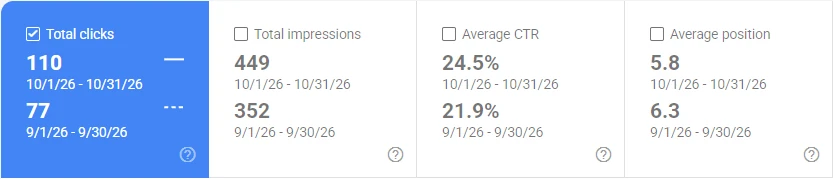

← بازگشت به پروژهها
سئو و محتوا / آکادمی هومت
مسیر روشنتر از جستوجو تا یادگیری.
پروژهٔ سئو و محتوای عملی روی پلتفرم آموزشی وردپرسیِ خودم.
مطالعهٔ پروژهآکادمی هومتگفتوگو دربارهٔ پروژه ↗
01
زمینهٔ مسئله
ووکامرس و Tutor LMS نشانیهای مشابهی برای محصول و دوره میساختند. ساختار محتوا و ایندکس صفحات هم نیاز به بازبینی داشت.
02
کاری که انجام دادم
دادههای سرچ کنسول را بررسی کردم، برای نشانیهای قدیمی محصول ریدایرکت به صفحهٔ دوره چیدم، محتوای صفحات را متناسب با نیت جستوجو اصلاح و وضعیت ایندکس را بررسی کردم.
03
آنچه در دادهها دیده شد
سرچ کنسول در سپتامبر ۲۰۲۶، ۷۷ کلیک و در اکتبر ۲۰۲۶، ۱۱۰ کلیک ثبت کرد (۴۲٫۹٪ افزایش). کارهای اکتبر شامل ریدایرکتها، بهبود محتوا و بررسی ایندکس صفحات بود.

منابع و لینکها